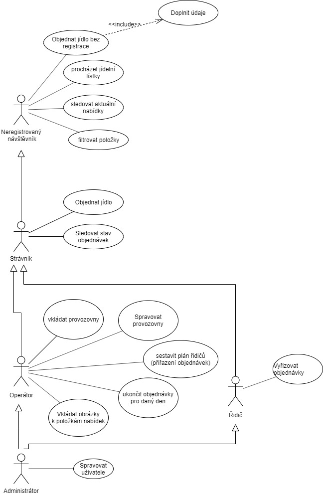
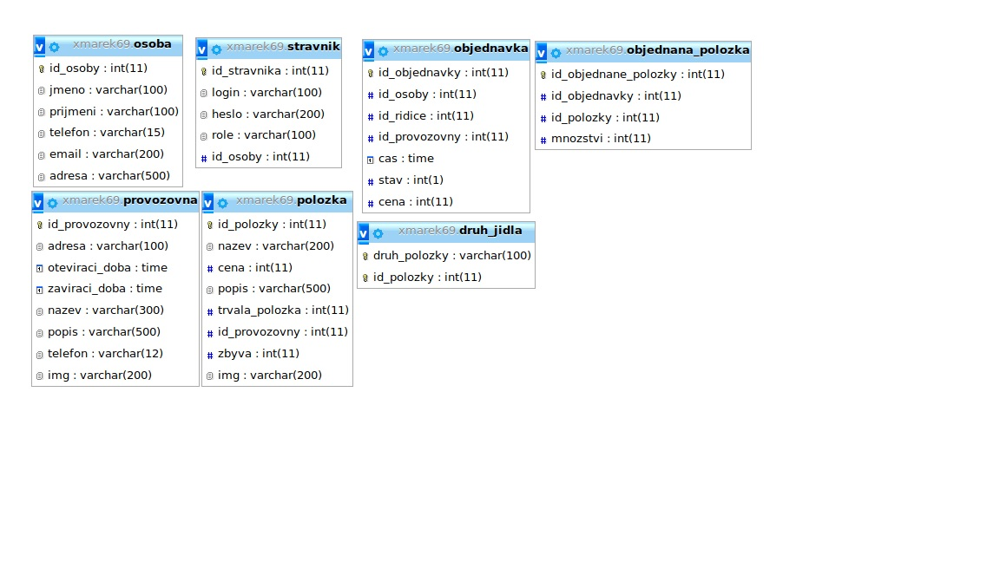

Varianta termínu - 2. Jídelna: objednávka a rozvoz jídel
- Autoøi
- Petr Marek
xmarek69@stud.fit.vutbr.cz -
Databáze(návrh a práce s ní) a èásti backendu.
- Jakub Gajdo¹ík
xgajdo24@stud.fit.vutbr.cz -
Vìt¹ina front endu a èásti backendu.
- Daniel Bílý
xbilyd01@stud.fit.vutbr.cz -
Práce s databází a backend.
- URL aplikace
- http://www.stud.fit.vutbr.cz/~xmarek69/IIS/
U¾ivatelé systému pro testování
| Login | Heslo | Role |
|---|
| admin | admin | Administrátor |
| operator | operator | Operátor |
| ridic | ridic | Øidiè |
| uzivatel | uzivatel | U¾ivatel |

Implementace
Struèná dokumentace k implementaci, která popisuje, které èásti projektu (napø. PHP skripty) implementují jednotlivé pøípady pou¾ití.
Aplikace je implementována ve frameworku code igniter, který následuje klasický vzor MVC. Skripty jsou tedy umístìny ve slo¾kách podle tohoto vzoru(models, views, controllers). Máme 3 modely: Pro restaurace, u¾ivatele a objednávky. Ka¾dý controller má vìt¹inou svùj view. V controllers je 7 skriptù, které jsou pojmenovány podle toho co implementují. Admin.php implementuje správu u¾ivatelù pro admina. Account.php funkce týkající se úètù(zmìna dat v úètu a zmìna hesla). Driver.php pak stránku pro øidièe, zde si øidiè mù¾e prohlí¾et objednávky, které dostal za práci doruèit. Po doruèení je mù¾e odkliknout jako hotové. Dal¹ím souborem je Home.php, ve kterém je hlavní stránka, pøihla¹ování a registrace. Operator.php obsahuje v¹echny funkcionality týkající se oparátorù, operátor má zde mo¾nost ru¹it objednávky u¾ivatelù a nebo je pøiøazovat jednotlivým øidièùm. Orders.php zobrazuje pøehled objednávek daného u¾ivatele. Restaurant.php má v¹e týkající se restaurací(jejich informace, jídelníèky apod.).
Databáze

Instalace
Struènì popi¹te:
- postup instalace na server,
- softwarové po¾adavky (verze PHP apod.),
- jak rozbalit, konfigurovat, inicializovat databázi, ...
Postup instalace na server: Stáhnout code igniter 3 z oficiálních stránek https://codeigniter.com/en/download. Nahradit slo¾ku application(na místo pùvodní vlo¾it na¹i). Do stejné slo¾ky(ve které je slo¾ka application) vlo¾it na¹i slo¾ku assets.
Softwarové po¾adavky: Aplikaci jsme vyvíjeli za pomocí PHP verze 7.2(která je na evì), pøedpokládám ¾e by ale mìla bì¾et i na star¹ích verzích(5.6+).
Pro inicializaci databáze je pøítomen skript db.sql, který staèí importovat napøíklad do phpmyadmin. Vytvoøí se v¹echny potøebné tabulky a naplní se daty. Databáze u¾ ale musí být vytvoøena pøedem.
Odevzdaná aplikace je nastavena, aby se pøipojila k databázi na evì xmarek69. Pokud by tohle bylo potøeba zmìnit, staèí pøenastavit v application/config/database.php úplnì dole.
Známé problémy
Nejsou hashována hesla kvùli transparentnosti pøi prùbì¾ném testování a pøi kontrole po odevzdání.